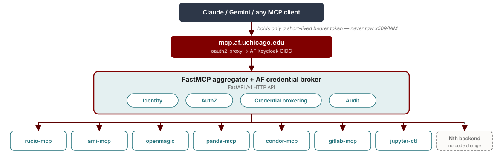

$ claude mcp add --transport http atlas-af https://mcp.af.uchicago.edu/mcp
what is needed behind this URL?
Claude Code · any model · any harness
› Using the atlas-af mcp, let's find a 1 TeV Higgsino in the Run 2 + Run 3 dataset.
HTCondor Workshop · Lyon · 2026‑10‑01
Building an MCP Platform for Scientific Computing


The big picture
$ claude mcp add --transport http atlas-af https://mcp.af.uchicago.edu/mcp
what is needed behind this URL?
Claude Code · any model · any harness
› Using the atlas-af mcp, let's find a 1 TeV Higgsino in the Run 2 + Run 3 dataset.
Where the work is
The first two change week to week. That isn't what limits agentic workflows: it's reliable, secure access to the tools, data, and identities users already have.
Same prompt: “Where should my job outputs go?”
“Next to the job, in your home area.”
→ big files fill the home quota in minutes
“Big outputs to fast local scratch; small summaries in your backed-up home.”
→ same model, more context
An open protocol connecting AI assistants (LLMs like Claude or Gemini) to the libraries, databases, and services scientists already use.
MCP (JSON-RPC)
⟷
Python · subprocess · REST
⟷
tools functions the LLM calls resources data it reads prompts reusable templates
from fastmcp import FastMCP
from rucio.client import Client
mcp = FastMCP("rucio")
client = Client()
@mcp.tool()
def list_dids(scope: str,
pattern: str = "*") -> str:
"""Search datasets in a scope by wildcard.
Use a narrow pattern; results are paginated.
"""
return ", ".join(
client.list_dids(scope, {"name": pattern}))
mcp.run()rucio-mcp started from this barebones structure
list_dids, schema scope: str, pattern: str = "*", description = the docstringrucio.client, not the CLI: structured data in, curated text outfastmcp handles the JSON-RPC; you only write the functionThe facility lets my agent do things and learn things:
The USATLAS marketplace gives it know-how:
No extra barriers for analyzers*; self-service access to what the facility already offers.
Never leak your credentials to the agent; never leak sensitive experiment data**.
Telemetry on usage: which tools get used, which don't.
*apart from having your own LLM assistant · **depends on the experiment’s guidance
every MCP tutorial
→
→
the UChicago AF, in production
→
→
→
→
→
→
rucio-mcp · datasets, 45 toolsami-mcp · metadata, 11 tools + a query DSLaf-jupyterlab-mcp · notebooks, 22 toolsaf-filesystem-mcp · 4 read-only toolscondor-mcp · batch jobs, 25 toolsatlas-search-mcp-bridge · to CERN's ATLAS OpenSearch MCPaf-mcp-platform · gateway + brokervoms-token-service · grid proxieskrb5-token-service · Kerberoscondor-token-service · HTCondor IDTokensaf-credentials · shared verify/redeem libraryOverview · the platform boundary
One endpoint in front of the facility’s services. The LLM client never holds raw credentials; the broker authenticates the user, mints per-service credentials, and audits every tool call.

Identity, authZ, credential brokering, and audit in one place: the same boundary a facility wants in front of its services, with or without AI.
The first design choice
one deploy per-VO auth in one process
clean isolation N servers to run
one identity token sprawl / choke point
We run the gateway: one identity, one place to authorize and audit. Next: how we handle token sprawl and the choke point.
FastMCP composition = one auth provider per server; that constraint drives a lot of the design.
mcp-portal.af.uchicago.edu · live
The assistant never holds a raw credential; the user's token is never forwarded.
Group-based access; denials audited too.
Minted per service, cached at the broker, reused until expiry; the per-call copy is deleted after use.
The agent speaks intent ("get this dataset", "run on the cluster"); the facility wires the backend. Infrastructure‑as‑Config: the Nth MCP server is Helm values on Kubernetes, never a change to the server.
1
Claude calls rucio-atlas_rucio_list_dataset_replicas with its personal access token
2
Gateway authenticates; groups and POSIX identity come from the IdP (Keycloak) on every call
3
Authorized once: this tool requires read_data; denials are audited too
4
Broker mints a JWT: aud=rucio-mcp-atlas (one service), exp = 10 min; it says who you are, not what you may do
5
rucio-mcp verifies that JWT, then redeems the VOMS proxy directly from the broker's vault
6
One Rucio call as the user; proxy deleted; one audit record, traced and metered
The user's token is never forwarded downstream; proxies and tickets never pass through the gateway.
@mcp.tool()
async def create_jupyter_server(
image: str,
name: str | None = None,
cpu_cores: int = 2,
memory_gb: int = 8,
...
) -> str:
"""...The server is always owned by the caller
(from their verified broker identity) --
there is no owner argument. ..."""
claims = await get_broker_claims(ctx, verifier)
... create_notebook(owner=claims.unixname, ...)The principle
Do not expose dangerous parameters; derive them from verified identity.
tools/jupyterlab.py, abridged.e.g. a VOMS proxy or Kerberos ticket: fetch it → 0600 temp file → one backend call → delete it. The MCP server keeps nothing.
The user's token never goes downstream (the spec forbids it). Each hop gets a fresh short-lived JWT, valid for one service, expiring in 10 minutes.
e.g. only condor-token-service touches the Condor pool key; the broker is its only allowed caller, and it returns short-lived IDTokens.
bad: a token service deciding permissions
if "atlas-users" in token["groups"]:
mint_ticket(user)
# a second copy of the access rules,
# trusting whatever the token claimsgood: it only verifies who is calling
claims = verify(token, aud="krb5-token-service")
mint_ticket(claims["sub"])
# the gateway already decided permissions;
# this token proves who, from the brokersketch; written into all three token services' docstrings (krb5 app.py)
Never store secrets in the MCP server. Keep them in a vault (OpenBao, here) behind the broker, and mint short-lived credentials per call.
The only pod that sees home dirs and Globus passphrases. Runs voms-proxy-init impersonated; privilege floor found live, five times.
Password → kinit → ticket; zero secrets at rest, passwords zeroed on every exit path. Rate limiter protects CERN's lockout counter, not itself.
Runs condor_token_create next to the pool key, which "must never reach the broker": it can mint any identity.
Why three services, not one
Different privilege floors (root+caps / none / one init container). Merging them forces the union of privileges onto everything. Each is a one-question audit: "did this call come from the broker?"
Lessons learned · ↓ four more
Design decisions baked into the AF MCP Platform
rucio-atlas_*, fs_*)tools/list, so the gateway mints one just to enumeratetools/list instead of every call failingAdding the Nth MCP
Each MCP is added via config (Infrastructure‑as‑Config: Helm charts on Kubernetes). Sometimes it needs a token service, sometimes a bridge, never changes to the MCP itself.
Lessons learned · deep-dive
bad: the raw API dump
{"logicalDatasetName": "mc23_13p6TeV.601229...",
"crossSection": "0.729", "crossSection_unit": "nb",
"genFiltEff": "1.0", "kFactor": "1.0",
"principalPhysicsGroup": "...", "prodsysStatus":
"...", ...95 more fields, duplicate rows...}every field, no units help, and the same for each of 50 datasets
good: markdown-friendly, LLM-friendly
**mc23_13p6TeV.601229** (PhPy8EG ttbar) · VALID
Cross-section: 729 pb (0.729 nb × 1000)
Events: 2M · k-factor: 1.0
---
**Next steps:**
- ami_get_dataset_prov for provenance
- rucio_list_dataset_replicas to locate copies~15 curated fields, units converted in the open, follow-up tools named
The docstrings keep getting fixed against each tool's actual behavior, to teach the LLM how to use it correctly. The LLM reproduces examples verbatim, so a doc bug is a behavior bug.
Lessons learned · deep-dive
bad: what the agent sees by default
Traceback (most recent call last):
File ".../replicaclient.py", line 158, ...
rucio.common.exception.DataIdentifierNotFound:
Data identifier 'user.gstark:mydata'
not founda dead end: nothing tells the agent what to try next
good: what rucio-mcp returns instead
Error: Data identifier
'user.gstark:mydata' not found
**Recovery:** The DID does not exist in
Rucio. Use `rucio_list_dids` with a
wildcard pattern to search for it.returned to the agent, not raised into server logs; the next tool is named
Empty results carry the same routing hints. The error categories also feed my monitoring, so I can see which tools confuse the agent.
MCP results have an isError flag so clients can tell failure from success. I didn't set it at first; do both.
tools/_helpers.py (classify_error).Lessons learned · deep-dive
bad: rucio_list_files("mc23..."), unbounded
mc23_13p6TeV:file_000001.root
mc23_13p6TeV:file_000002.root
mc23_13p6TeV:file_000003.root
... 499,997 more lines ...one call floods the LLM's entire context window, and the server downloaded all 500k names to do it
good: capped, and the output says so
mc23_13p6TeV:file_000001.root
... 49 more ...
---
Showing 50 results (offset=0).
Pass `offset=50` to see more.a hard server-side limit, announced in the output, with the way to continue spelled out
And cap the server's work too: rucio-mcp once fetched that whole 500k-file container upstream just to serve one 50-row page. Paginate the upstream iterator, not just the output.
tools/_helpers.py (paginate_iter).| Tried | Discovered | Ended with |
|---|---|---|
| Rust CLI wrapper | parsing text tables is fragile | Python + native client |
| Returning raw API rows | noise swamped the LLM | curated fields, converted units, next steps |
| Docstrings written from memory | the LLM reproduced broken examples verbatim | docstrings tested against the live service |
| Stateful MCP sessions, 2 replicas | cross-replica "Session terminated" | stateless HTTP (now the spec default) |
| Dynamic Client Registration | you maintain a database of client ids, and a restart orphans them all | CIMD (later adopted by the spec) |
| Groups inside JWT claims | revocation waits for token expiry | live IdP lookup, a real kill switch |
Also on the facility's plate · deep-dives linked
The client_id is a URL the server fetches: no registration database, and the facility picks which domains it trusts. Watch for SSRF.
why · mechanics · live trace
Swap permanent SSH keys for short-lived federated credentials. An agent with a shell inherits minutes, not a key that lives forever.
Pods, then bubblewrap off Kubernetes, then eBPF policy, then human-gated privilege. Harnesses can advise, but can't reliably hard-deny.
Same context layer, for operators
Find data, generate code, submit, recover, fit. Low autonomy, high convenience.
Cluster health reports, hold-reason triage, drafted user emails, human-approved.
Config/runbook copilots in the privileged lane; trust earned, actions gated.

Morning report: 448 held of 14,671 (3.1%)

Drafted fix → human types “approve” → sent
Same context layer, different autonomy and blast radius at each level. The facility decides where the human gate sits.
live · the UChicago AF
$ claude mcp add --transport http atlas-af https://mcp.af.uchicago.edu/mcp
One prompt: submit an HTCondor job · start a Jupyter server · whoami · service catalog · AMI · Rucio · ATLAS OpenSearch · watch the job finish
Interoperable tool interfaces are likely to matter more than LLM-specific integrations.
| My choice | MCP 2.0 spec (2026-07-28) | Verdict |
|---|---|---|
| Stateless HTTP, state as explicit handles | protocol sessions removed | compliant / anticipated it |
| CIMD instead of Dynamic Client Registration | DCR deprecated for CIMD | compliant / anticipated it |
| Tools only; no sampling, roots, logging | all three deprecated | compliant / anticipated it |
| Exchange tokens, audience-validate everywhere | token passthrough forbidden (MUST) | compliant |
outputSchema on tools that return data | structured content recommended | compliant; fixed since PyHEP.dev |
| Read-only / destructive tool annotations | annotations recommended | compliant; fixed since PyHEP.dev |
Open questions for this room
How should facilities expose context?
One MCP per service or a gateway delegating identity? Where does your audit live?
How do we share context between facilities?
Shipped with the facility, or a shared commons? Single-source vs forks; eval/lint for orthogonality; who keeps it true?
How do we evaluate, and secure, an autonomous operator?
Human gates, k8s vs bubblewrap/eBPF isolation, credential brokering so agents never hold raw secrets, a trust ladder with an eval-harness promotion gate.
What makes an environment truly portable?
pixi-native batch as the default? Supply-chain policy for conda-forge?
Who pays for inference, and is that fair?
Hosted frontier vs self-hosted open weights on facility GPUs; equity as policy.
What becomes standardized, across sciences?
A commons spanning facilities, experiments, and sciences: where’s the facility/experiment line?
My bet: the model and harness are the easy part. Context, identity, trust, and equity are the facility’s homework.
Swap the model and harness freely. The facility’s context, identity, and credentials are what make it useful and safe, and that layer ports to the next facility.
Still hard: more brokered backends (PanDA next) · hard-deny for agents with a shell · testing against the live services, not mocks
Design the interface for the model; design the architecture for the credential.